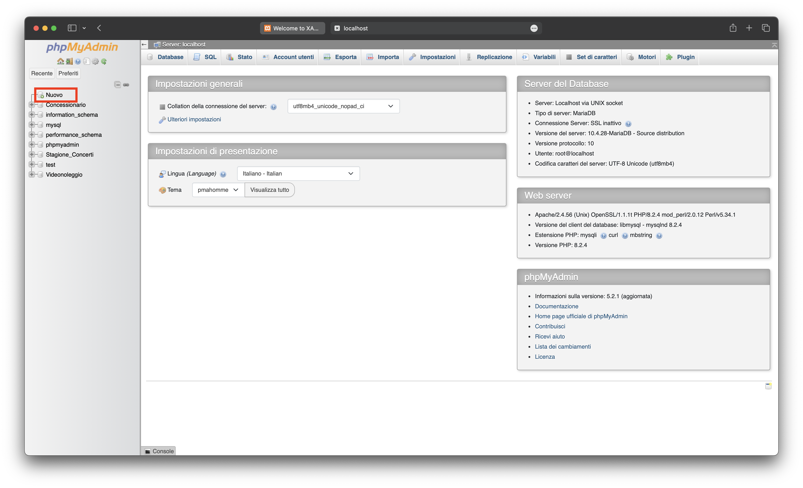

Installazione Xampp
Per iniziare a lavorare con il software Xampp è necessario scaricarlo ed installarlo nel proprio computer. Dopo averlo scaricato l’installer dalla pagina ufficiale.
Una volta finito il Download , aprire il file scaricato, e trasciniamo xampp sulla cartella delle applicazione(una volta richiesto):
Una volta copiato nella cartella delle applicazioni, lo lanciamo. Appena entrati su Xampp, prima di tutto dobbiamo entrare dentro la cartella di Xampp tramite il bottone "Open Application Folder", appena entrati entriamo su "etc" e subito dopo su "extra" e dobbiamo aprime il seguente file txt "httpd-xampp.conf":
Una volta aperto il file dobbiamo inserire, tra il tag "Directory" dopo l'ultima stringa (per sicurezza)la frase "Require all granted", una volta incollata, salviamo il file e chiudiamo il file:
Finito ciò dobbiamo andare su "services" e cliccare su "Start All":
Creazione database con XAMPP
Una volta che sono diventati tutti verdi, torniamo su "Welcome" e clicchiamo sulla scritta "Go to Application":
Dopo aver cliccato il precedente bottone menzionato, si dovrebbe aprire la schermata iniziale.
Andiamo su phpMyAdmin:

Successivamente verrà aperta la pagina di “phpMyAdmin” nella quale sarà possibile creare e gestire database. Per crearne uno premiamo su “new” nel menù di sinistra:

Dop aver cliccato su "new", possiamo impostare il Nome del nuovo database che abbiamo creato e la rispettiva codifica dei caratteri, dove la lasicamo predefinita:
Dopo aver creato un database, è possibile procedere alla creazione delle tabelle destinate all'inserimento dei dati. Per iniziare, seleziona il database appena creato dal menu di sinistra. Successivamente, imposta il nome e il numero dei campi desiderati per la tabella e infine premi il pulsante "Esegui" per confermare le modifiche:
Definiamo gli attributi:
- 1.Per creare un nuovo attributo, fare clic sul pulsante "Aggiungi attributo" nella parte inferiore della pagina.
- 2.Nel campo "Nome attributo", inserire il nome dell'attributo che si desidera creare.
- 3.Nel campo "Tipo di dato", scegliere il tipo di dato appropriato per l'attributo, tra: testo, numero, data/ora, si/no oppure una numerazione automatica.
- 4.Nel campo "Lunghezza del valore", inserire la lunghezza massima del valore dell'attributo, espressa in caratteri o cifre.
- 5.Nel campo "Valore dell'attributo", scegliere tra 'binary', 'unsigned' o 'unsigned zerofill' a seconda delle specifiche esigenze.
- 6.Se l'attributo può contenere valori nulli, spuntare la casella di controllo "Null".
- 7.Se l'attributo deve essere utilizzato come chiave primaria, spuntare la casella di controllo "Primary". Se invece deve essere utilizzato come chiave unica, spuntare la casella di controllo "Unique". Se infine l'attributo deve essere utilizzato come chiave esterna, spuntare la casella di controllo "Index".
- 8.Se si desidera che il valore dell'attributo aumenti automaticamente, spuntare la casella di controllo "A_I" (auto increment).
- 9.Se si desidera aggiungere un commento all'attributo, scrivere il commento nel campo "Commento".
- 10.Una volta terminato di inserire gli attributi, scegliere 'InnoDB' come 'Storage engine' nella parte superiore della pagina.
- 11.Fare clic sul pulsante "Salva" per creare la tabella.
Per gestire le relazioni tra le tabelle, selezionare il database in questione e fare clic sulla voce "Designer" in alto a destra. Se la voce "Designer" non si vede, è necessario posizionare il mouse sopra la scritta "Più" in alto a destra e scegliere "Designer" dall'elenco a discesa.
Dopo aver selezionato "Designer", si potrà visualizzare una rappresentazione grafica delle tabelle presenti nel database, con le rispettive colonne. Utilizzando gli strumenti a disposizione (ad esempio, un connettore o una freccia), è possibile creare relazioni tra le tabelle e definire le condizioni di integrità referenziale.
Ad esempio, se si desidera creare una relazione tra due tabelle, si può fare clic sull'attributo chiave esterna della prima tabella e trascinarlo sull'attributo chiave primaria della seconda tabella. Una volta stabilita la relazione, è possibile utilizzare la freccia a destra del connettore per specificare ulteriori condizioni di integrità referenziale, come l'azione da intraprendere quando viene violata la relazione.
Infine, è possibile utilizzare la barra degli strumenti in alto a sinistra per eseguire diverse operazioni sulle tabelle, come ad esempio l'aggiunta o la modifica di attributi, l'aggiunta o la modifica di chiavi primarie, l'aggiunta o la modifica di chiavi esterne e così via.
Se la struttura del database è stata creata in modo giusto verrà rappresentata in modo grafico la relazione tra le tabelle:
In seguito, si aprirà la pagina contenente la rappresentazione grafica delle tabelle create. Cliccando sull'icona del collegamento nella parte superiore, sarà possibile connettere la chiave primaria con la chiave esterna delle tabelle. Durante questo processo, ti verrà richiesto di specificare come il Database Management System (DBMS) dovrebbe gestire la cancellazione o la modifica dei record. Seleziona l'opzione "cascade" per indicare al DBMS che, in caso di cancellazione o modifica dei record precedentemente indicate, dovrà apportare automaticamente le modifiche corrispondenti nelle altre relazioni.